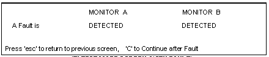

Illustration 5: ‘T’ Test Mode Screen (No Fault)

Illustration 5: ‘T’ Test Mode Screen (No Fault)
The screen shown in Illustration 5 will be used to remotely and individually monitor Power Monitors A and B for faults.
When a fault occurs the word DETECTED will be displayed below the power monitor that registered the fault. Illustration 6 shows a situation where both power monitors registered a fault.
Illustration 6: ‘T’ Test Mode Screen (With Fault)

The <C> key on the laptop permits the FE to reset the status of Monitors A and B displayed on the Test Mode Screen to “Not Detected” after the FE has manually reset the Power Monitor A and B Reset Switches on the front of the SSM.
| NOTE: | When appropriate use the RF Power Measurement Kit, Wattmeter, or Oscilloscope to measure the RF output power and validate that the power monitors are faulting or not faulting at the proper RF power levels. While the Main Screen of the MONS1.EXE software also provides a power measurement readout display for each power monitor, the integrity of each power monitor should be validated independently using the RF Power Measurement Kit, Wattmeter, or Oscilloscope. |